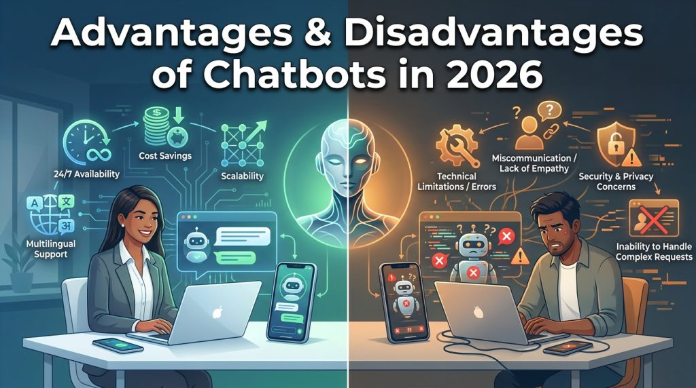

In 2026, chatbots have moved from simple FAQ bots to sophisticated AI-powered assistants that handle everything from customer support and lead qualification to content ideation and personalized recommendations. The global chatbot market is projected to reach approximately $11.8 billion in 2026, growing at a strong CAGR as businesses seek efficiency and better customer experiences.
But are chatbots truly revolutionary, or do they create more problems than they solve? This comprehensive guide breaks down the advantages and disadvantages of using chatbots with the latest statistics, real-world examples, mitigation strategies, and actionable implementation tips tailored for 2026 realities.

Whether you run an e-commerce store, SaaS platform, educational site, or service business in India or globally, understanding both sides helps you make smarter decisions.
What Are Chatbots and How Have They Evolved in 2026?
A chatbot is software that simulates human conversation through text, voice, or multimodal interfaces (text + images + voice).
Early chatbots were rule-based (if-then scripts). Today’s versions leverage generative AI, large language models (LLMs), retrieval-augmented generation (RAG), and agentic capabilities. They can understand context, pull real-time data, handle voice input/output, and even complete multi-step tasks.
Modern chatbots fall into categories like:
- Customer support bots
- Conversational commerce assistants
- Internal productivity tools
- Specialized domain bots (education, healthcare, finance)
For Indian users, support for Hinglish, Hindi, and regional languages has become a major differentiator.
For a detailed comparison of top AI chatbots (including specialized options built for Indian users), read our guide on Best ChatGPT Alternatives in 2026.
Key Advantages of Using Chatbots
Here are the major advantages of using chatbots that explain their rapid adoption:
1. 24/7 Availability and Instant Responses
Chatbots never sleep, take breaks, or suffer from time-zone issues. They provide instant first responses, dramatically reducing wait times. This is especially valuable for global businesses and after-hours support in India where customers expect quick answers on WhatsApp or websites.
2. Significant Cost Savings
Industry data shows chatbot interactions cost around $0.50 per conversation compared to $6+ for human agents — a 12x difference. Juniper Research projects over $11 billion in annual business savings by 2026 from deflected tickets and reduced agent workload. Many companies report 20–30% reductions in customer support costs.
3. Superior Scalability
A single well-configured chatbot can handle thousands of simultaneous conversations during peak times (festive sales, exam seasons, product launches) without quality drop or extra hiring. This is a game-changer for growing Indian startups and e-commerce businesses.
4. Improved Customer Engagement & Lead Generation
Proactive chatbots can greet visitors, recommend products, qualify leads, and guide users through funnels. E-commerce examples like Sephora and H&M use bots for personalized styling advice and stock checks, turning support widgets into revenue channels.
5. Consistent, High-Quality Responses
Unlike humans who vary in knowledge and mood, chatbots deliver consistent answers based on your knowledge base. This builds trust for repetitive queries (order status, pricing, return policies, exam patterns, government schemes).
6. Multilingual & Hinglish Support
Advanced models handle dozens of languages fluently. For Indian businesses, this means serving customers in Hindi, Hinglish, Tamil, Bengali, and more without maintaining large multilingual teams. Specialized tools excel here.
7. Valuable Data Collection & Insights
Every conversation reveals customer pain points, popular questions, and intent signals. This data improves products, content strategy, and marketing — turning your chatbot into a continuous research tool.
8. Faster Resolution for Routine Queries
70–80% of support tickets are repetitive. Chatbots resolve these instantly, freeing human agents for complex, high-value issues and improving overall team productivity.
9. Easier Implementation Than Ever
No-code/low-code platforms and API integrations (like DeepSeek or similar models) allow deployment in hours or days. Custom solutions on WordPress are now straightforward.
Businesses and creators can leverage similar AI capabilities for generating ideas and content — check out our guide on Best AI Tools for Content Creation.
Major Disadvantages of Using Chatbots (and How to Overcome Them)
No technology is perfect. Here are the key disadvantages of using chatbots in 2026 and practical ways to address them:
1. Difficulty Handling Complex or Nuanced Queries
Bots still struggle with sarcasm, multi-intent questions, heavy jargon, or highly contextual problems. Frustration spikes when users feel trapped in loops.
Mitigation: Implement confidence thresholds that automatically escalate low-confidence queries to humans with full conversation context. Regularly review logs to improve the knowledge base.
2. Lack of True Empathy and Emotional Intelligence
Chatbots cannot genuinely feel or respond empathetically to anger, grief, or sensitive complaints. Overly human-like personas can backfire.
Mitigation: Disclose that users are talking to AI. Train bots to detect frustration keywords and route immediately to human agents. Use hybrid models (bot for routine + human for emotional/high-stakes issues).
3. Maintenance and Data Staleness
Business changes (new pricing, policies, product updates) can make bot answers outdated quickly.
Mitigation: Treat the chatbot as a living product. Assign ownership for weekly log reviews and knowledge base updates. Integrate with your CMS so content changes propagate automatically.
4. Security, Privacy, and Compliance Risks
Chatbots process user data, raising concerns around GDPR, India’s Digital Personal Data Protection Act, and industry regulations.
Mitigation: Choose vendors with strong encryption, data residency options, and compliance certifications. Limit data collection, provide clear privacy notices, and conduct regular audits.
5. Customer Acceptance and Trust Issues
Some users (especially older demographics or those with past bad experiences) prefer human interaction or distrust AI.
Mitigation: Make human escalation options highly visible. Segment deployment — use bots on FAQ/help sections and humans for enterprise or sensitive queries. Gather feedback with thumbs up/down ratings.
6. Initial Setup and Ongoing Costs
While easier than before, quality implementation still requires auditing knowledge bases, designing escalation flows, and continuous optimization.
Mitigation: Start with a focused pilot on high-volume, low-complexity use cases. Measure deflection rate and ROI from week one.
While automation raises valid questions about job impacts, many roles evolve rather than disappear. Explore our analysis on Which Jobs Will AI Take Over and Which Are Safe in 2026.
Chatbots vs Human Support: When to Use Each
Use chatbots for:
- High-volume repetitive queries
- After-hours and global support
- Lead qualification and initial engagement
- Information retrieval (order status, policies, product specs)
Use humans for:
- Complex troubleshooting
- Emotional or sensitive situations (complaints, refunds with nuance, mental health)
- High-value sales or negotiations
- Situations requiring creativity or deep domain judgment
The winning strategy in 2026 is hybrid: bots handle 70-80% of volume instantly, with seamless handoff to humans when needed.
Best Practices for Successful Chatbot Implementation in 2026
- Start with a clear use case and measurable goals (e.g., reduce ticket volume by 40%).
- Build or audit a high-quality knowledge base first.
- Design thoughtful escalation paths with full context transfer.
- Choose the right tech stack (no-code platforms for speed or custom API integrations like DeepSeek for control and Indian language performance).
- Monitor conversations weekly and continuously improve.
- Be transparent that users are interacting with AI.
- Test across devices, languages, and user personas.
Specialized tools demonstrate these principles well. See how conversational AI principles power creative tools like our Free AI Plot Generator.
Real-World Examples and Case Studies
- E-commerce: Brands use chatbots for personalized recommendations and order tracking, boosting conversions.
- Banking & Finance: Significant cost savings reported through automated routine queries.
- SaaS/Sales: Examples like replacing large parts of sales teams with well-managed AI agents while maintaining results.
- India-specific: Growing use in education (exam help, scheme queries), government services, and vernacular customer support.
Our own Desi AI Assistant on this site exemplifies tailored implementation — offering real-time search, voice input/output in Indian languages, and deep local context (festivals, exams, government schemes) at no cost.
The Future of Chatbots Beyond 2026
Expect more agentic AI (bots that complete tasks across apps), deeper multimodal capabilities (voice + vision + screen sharing), tighter integration with business tools, and improved emotional intelligence through better context handling. The gap between basic and advanced implementations will widen.
Frequently Asked Questions (FAQ)
Q: Are chatbots replacing human customer service jobs? A: They automate repetitive work, allowing humans to focus on complex and empathetic interactions. Overall support teams often become more efficient rather than smaller.
Q: How accurate are AI chatbots in 2026? A: Modern generative chatbots with RAG achieve high accuracy on trained topics but can still hallucinate or struggle with very novel queries. Hybrid setups with human oversight deliver the best results.
Q: What is the cost of implementing a chatbot? A: No-code solutions can start very affordably or even free for basic use. Custom or enterprise solutions vary widely based on features and volume. ROI is typically strong for high-query-volume businesses.
Q: Can chatbots handle Indian languages well? A: Yes — especially specialized models trained or fine-tuned for Hinglish, Hindi, and regional languages. General global models have improved but often lack deep cultural nuance.
Q: Should small businesses use chatbots? A: Yes, especially for after-hours support, lead capture, and handling common questions. Start simple and scale.
Q: How do I choose between building my own or using an existing platform? A: Use existing platforms for speed. Build custom (or integrate open models) when you need deep control, specific data privacy, or unique domain knowledge.
Conclusion: Should You Use Chatbots?
The advantages and disadvantages of using chatbots show a clear picture: when implemented thoughtfully with hybrid human oversight, chatbots deliver massive efficiency, cost savings, scalability, and better customer experiences. Poorly planned deployments, however, lead to frustration and missed opportunities.
In 2026, success depends less on having a chatbot and more on how well it is designed, maintained, and integrated into your overall support and engagement strategy.
If you’re exploring AI tools for your website or business, specialized solutions built with local context in mind often outperform generic global options.
Ready to experience a well-designed AI assistant tailored for Indian users? Try our free Desi AI Assistant right here on aitoolnotes.com or explore more practical AI resources across the site.
Have questions about implementing chatbots for your specific use case? Drop a comment below or reach out — we love helping creators and businesses leverage AI the smart way.
This post was last updated in June 2026 with the latest market data and implementation insights.